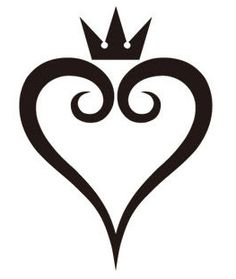

Kingdom Hearts II: Tasks
Home
Tasks
About

About
There is a myriad of things to do before finishing the game
Kingdom Hearts II
. Use this website to check off the final tasks in the game before fighting the final boss.
Home
About